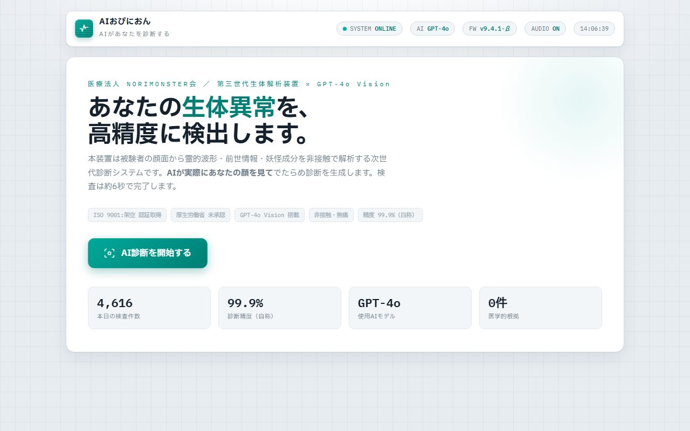
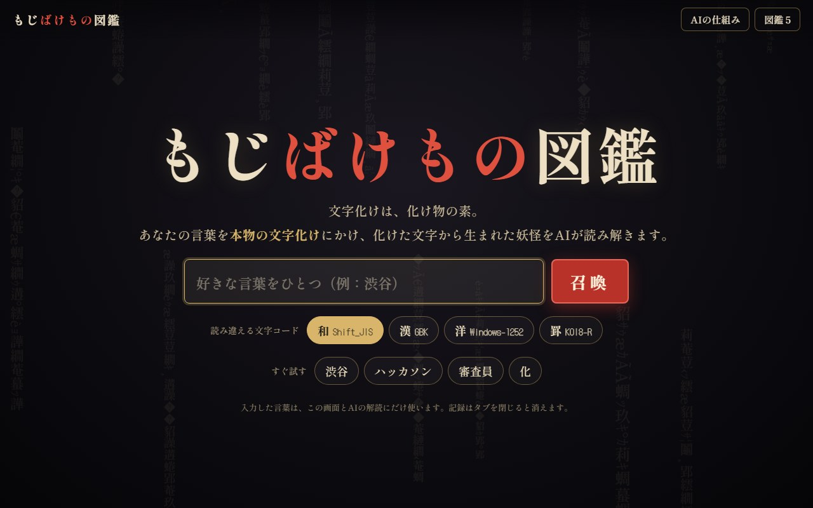
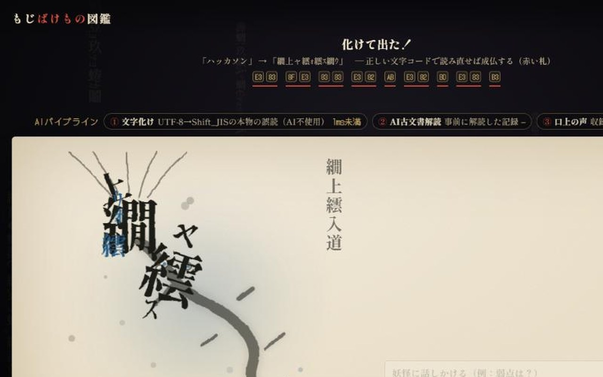

決勝 ／ 公開
全日本AIハッカソン 2026 決勝で優勝しました
AI FESTIVAL 2026 の「全日本AIハッカソン 2026」に、チーム「のりもんすたー」として出場しました。東京・ベルサール渋谷ファーストで行われた決勝戦で、作品「もじばけもの図鑑」が優勝し、賞金10万円と優勝メダルをいただきました。予選から決勝までの記録を残します。

結果
| 予選 | 2026年5月30日・大阪／テーマ「デタラメ」 | 「AIおぴにおん」で Bブロック 1位（賞金 1万円） |
|---|---|---|
| 決勝 | 2026年11月7日・東京（ベルサール渋谷ファースト）／テーマ「化」 | 「もじばけもの図鑑」で 優勝（賞金 10万円・優勝メダル） |
| チーム | のりもんすたー（2人） | |
| 主催 | 株式会社サードウェーブ（AI FESTIVAL 2026 Powered by THIRDWAVE） | |
どんな大会か
全日本AIハッカソンは、その場で発表されたテーマに合わせて、Web で体験できる作品を数時間で作る大会です。プレゼン資料は使わず、実際に作品を動かして見せるデモで審査されます。予選は全国で複数回行われ、各ブロックの1位が決勝に進みます。決勝では今回から、一般の来場者も審査員として投票に加わりました。
予選：テーマ「デタラメ」—「AIおぴにおん」

予選のテーマは「デタラメ」。カメラに映った顔を AI（GPT-4o Vision）が見て、架空の「生体異常」をでたらめに診断するアプリを3時間で作りました。医療機器のような真面目な見た目にこだわり、まじめな画面からふざけた診断が出てくる落差で笑ってもらうことを狙いました。結果は Bブロック 1位で、決勝に進むことができました。
決勝：テーマ「化」—「もじばけもの図鑑」


決勝のテーマは「化」。「化ける」と「文字化け」をかけて、入力した言葉が文字化けして妖怪（ばけもの）になる図鑑を作りました。
- 入力した言葉を UTF-8 から Shift_JIS・GBK・Windows-1252・KOI8-R などで「読み違える」ことで、本物の文字化けを作ります。この部分には AI を使っていません。
- 化けた文字の形から妖怪の姿を描き、AI が古文書風の解説と口上を付けて、音声で読み上げます。
- 正しい文字コードで読み直すと妖怪が成仏する、という遊びを通して、文字コードの仕組みに触れられるようにしました。
予選をトップで通過したチームとの接戦でしたが、僅差で逆転して優勝することができました。
いただいた評価
「いかにもハッカーらしい遊び心に溢れた作品」
— 大会司会 清水亮さんの振り返り（note）より
会場とメダル


感謝
大会を主催・運営してくださった株式会社サードウェーブと AI FESTIVAL 2026 の皆さま、司会の清水亮さん、審査員の皆さま、投票してくださった一般来場者の皆さま、そして一緒に競い合った参加チームの皆さまに、心から感謝申し上げます。この経験を励みに、これからも人を楽しませるものづくりを続けていきます。
コメント
感想や応援のコメントをいただけるとうれしいです。いただいたコメントは、確認したあとに表示されます。
まだコメントはありません。